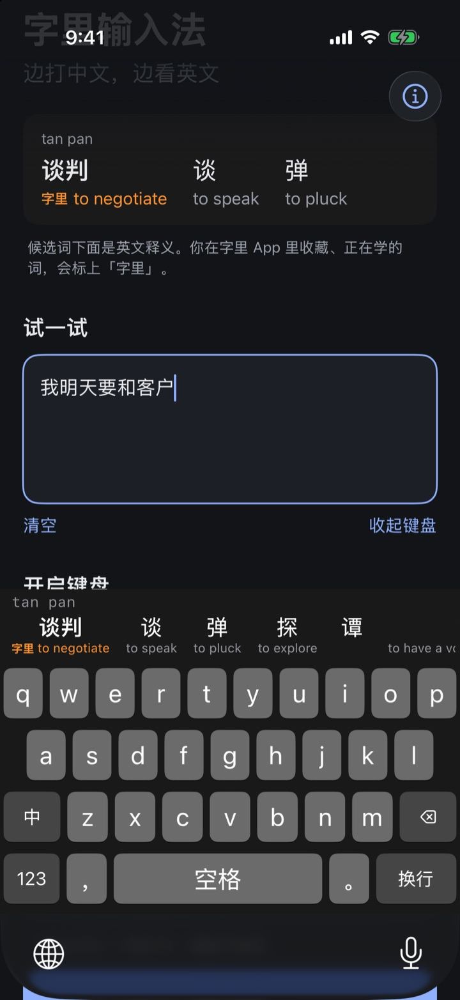
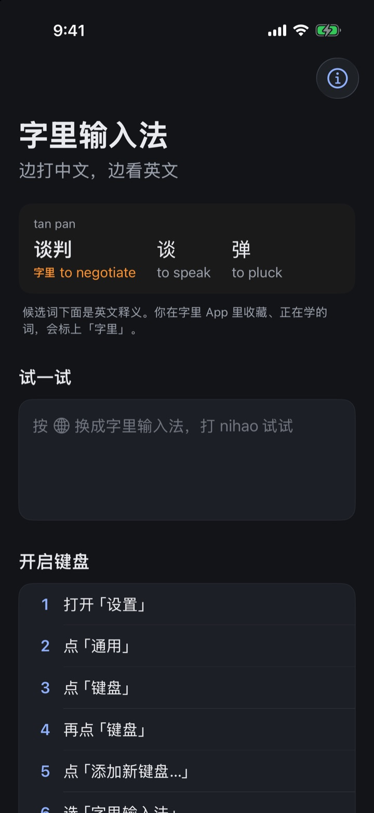
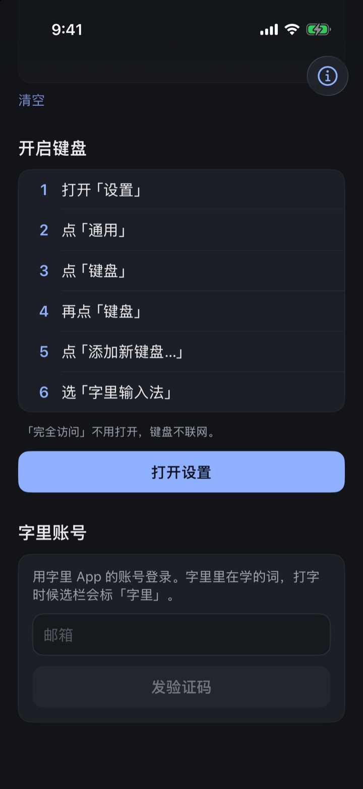

打一句试试。
点候选栏里的词，像在手机上一样把这句话打出来。候选和释义都是字里输入法真实给出的。
点下面的「我」开始
就是一个键盘，多了一行英文。
下面是字里输入法在 iPhone 上的真实截图（深色模式）。



打的字，不离开手机。
- 键盘不联网拼音转汉字、查英文释义，都在手机上完成。
- 不要「完全访问」系统设置里那个开关不用打开，键盘也用不着。
- 只下载，不上传登录后 App 只从字里取回你在学的词，不上传你打的任何字。
- 没有广告，不追踪你不做用户行为统计，不卖数据。详见隐私政策。
现在还在内部测试。
字里输入法还没上架 App Store，测试版暂时只在内部试用。开放下载后，链接会放在这里。装好以后这样开始：
- 打开字里输入法App 首页写着开启键盘的步骤，点「打开设置」直接跳过去。
- 添加键盘设置 → 通用 → 键盘 → 键盘 → 添加新键盘 → 字里输入法。
- 登录字里账号回到 App，用字里的邮箱登录。不登录也能打字和看释义。
先试试字里 App
字里 App 已经可以通过 TestFlight 试用